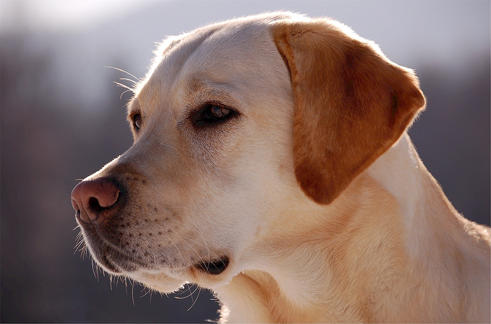

見本 2
flexbox レイアウト

フレンチ・ブルドッグ
8世紀イギリスの織物職人がフランスに渡った時、一緒に連れて行ったブルドッグが元となり、パグやテリアとの交配で誕生した。
日本には大正時代に紹介され、昭和初期には数多く飼育された。その後日本での人気は衰えたが、2000年代に入ってから人気が復活している。

ラブラドール・レトリーバー
ラブラドール・レトリーバー（ラブラドール・レトリバー、あるいはラブラドール・リトリーバーとも。英: Labrador Retriever）は、大型犬に分類される犬種。元来、レトリーバー（獲物を回収 (Retrieve) する犬）と呼ばれる狩猟犬の一種であるが、現在はその多くが家庭犬として、あるいは盲導犬や警察犬などの使役犬として飼育されている。
ラブラドール・レトリーバーの特徴として、本来の使役用途である網にかかった魚の回収に適した、水かきのついた足があげられる。カナダ[4]、イギリス[5]で登録頭数第1位で、アメリカでも1991年以来登録頭数第1位の人気犬種である[6]。また、洞察力、作業力に優れ、オーストラリア、カナダ、イギリス、アメリカなど世界各国で、身体障害者補助犬、警察犬など様々な用途に最適な犬種として使役されている。ラブラドール・レトリーバーは活発で泳ぐことを好み、幼児から高齢者までよき遊び相手であるとともに保護者の役割も果たす犬種である。